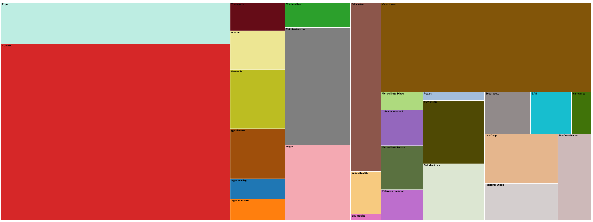

Por completar
Transacciones totales
Por completar
Total de categorías
Por completar
Categorías con más transacciones
Como Es posible Identificar los consumos Mensaules periodicos?

Nota: Treemap generado en RAWGraphs para analizar los consumos mensuales periódicos.
Segunda Visualizacion
Nota: Segunda visualización interactiva en Flourish.
Tercera Visualizacion
Nota: Tercera visualización publicada en Datawrapper.